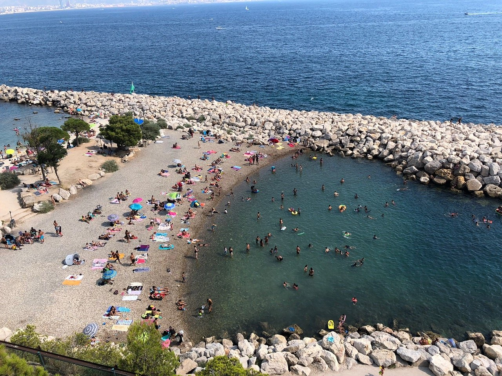
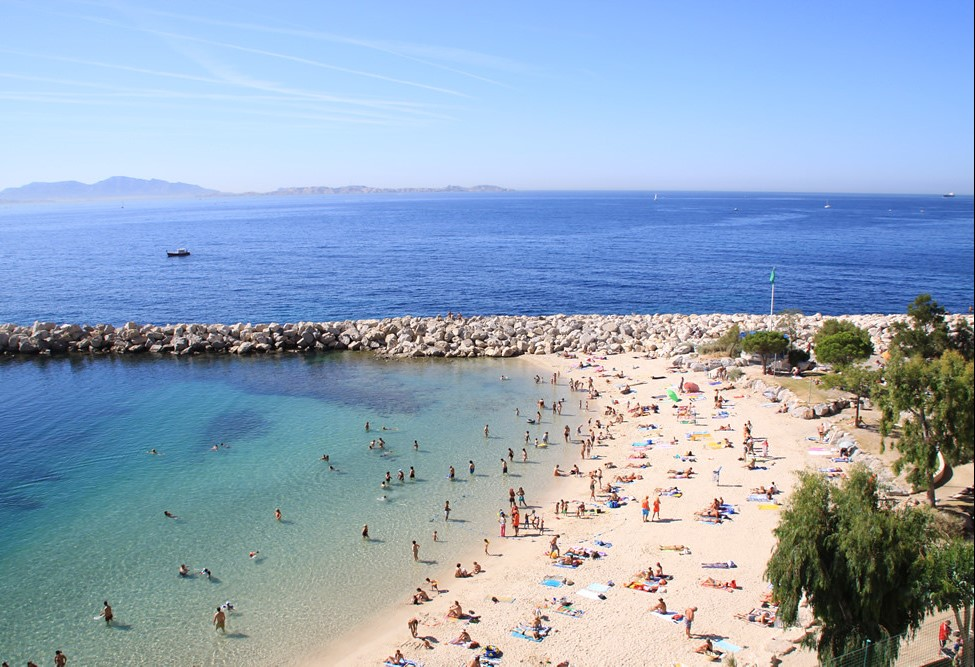
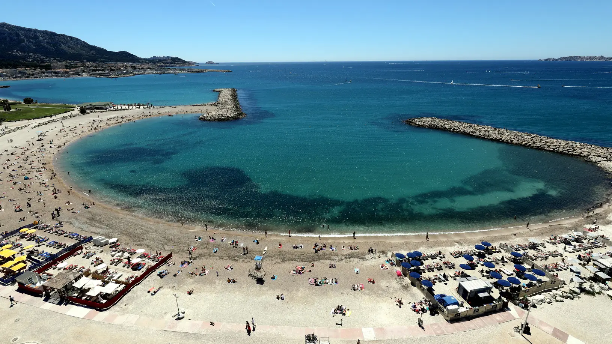

Les plus belles plages de Marseille

(Re) Découvrez où se baigner à Marseille. Voici 21 plages à Marseille
sympas, avec leurs moyens d’accès pour aller nager. Certaines plages ont seulement un
accès à la mer par des rochers et d’autres sont de véritables plages de sable. Des plages tranquilles,
d’autres sauvages. Voici nos plages pour se
baigner à Marseille.
Nos Plages surveillées :
9h30 à 19h sauf mention contraire :
- Corbière Fortin
- Corbière Batterie
- Corbière La Lave
- Frioul St Estève (surveillée de 10h à 18h)
- Les Catalans (surveillée de 10h à 19h30)
- Prophète
- Prado Nord (Petit Roucas)
- Prado Nord (Grand Roucas)
- Prado Sud
- Huveaune (David)
- Borély
- Bonneveine
- Vieille-Chapelle
- Pointe-Rouge
- Sormiou (surveillée de 11h10 à 18h30)
Zones non surveillées :
- Anse des Sablettes (Colombet)
- Les Goudes (La Maronnaise)
- Calanque de Morgiou
- Bain des Dames
- Anse des Phocéens
- Bonne Brise (Verrerie)
- Morgiret (Frioul)
- En Vau
- Port Pin
Des douches sans savon
En accord avec l’Agence régionale de la Santé, et dans l’objectif de préserver la qualité des eaux de
baignade, le dispositif de l’ensemble des douches sans savon du littoral est maintenu.
Des consignes gratuites
Grâce aux nombreux recrutements de la saison estivale, la Ville de Marseille offre chaque année,
gratuitement, des services de consignes (situées à proximité des postes de secours)
dans lesquelles les baigneurs peuvent laisser en toute sécurité leurs effets personnels. Les
consignes
sont ouvertes sur les mêmes horaires que les sanitaires.
Les sanitaires
Les plages surveillées, mais aussi celles situées entre le parc balnéaire du Prado et le Parc
national
des
Calanques, sont équipées de toilettes ouvertes tous les jours aux horaires suivants :
- 10h - 19h30 aux Catalans
- 10h - 18h au Frioul
- 9h30 - 19h sur les plages de Corbière, du Prophète, du Prado Nord et Sud, de l’Huveaune, de
Borély, de Bonneveine et de la Pointe Rouge.
Ce maillage sanitaire entretenu par la Ville de Marseille permet de maintenir la qualité des eaux de
baignades. Les ensembles sanitaires installés à proximité des postes de secours et les espaces
balnéaires du
Prado (8e) et Mistral (16e), sont entretenus chaque jour durant les heures d’ouverture.
Les postes de secours
Relais essentiels dans le dispositif de surveillance des plages, les postes de secours sont
opérationnels en période estivale de 9h30 à 19h - sauf mention contraire.
- Corbière (plages de la Lave, Batterie, Fortin)
- Frioul (plage de Saint-Estève) (de 10h à 18h)
- Prophète
- Prado Nord
- Prado Sud
- Huveaune
- Bonneveine
- Pointe-Rouge
- Sormiou (de11h10 à 18h30)
- Catalans (de 10h à 19h30)
L’ensemble de ces postes répond aux trois exigences du dispositif (sécurité, hygiène et confort) et
propose un niveau de prestation identique avec des sanitaires et des consignes gratuites (à
l’exception
de Sormiou et du Frioul).
Chaque poste de secours dispose :
- défibrillateurs cardiaques semi-automatiques,
- postes radios mobiles permettant une liaison permanente avec les patrouilles sur terre et en
mer,
- une pharmacie complète, du matériel médical dont notamment l’oxygénothérapie,
- des planches de secours en mer.
1. Plage du Fortin (galets)
Les jeux de ballon et la musique sont interdits. La plage est accessible aux familles et aux poucettes.

2. Plage de la Lave (sable)
Plage de la Lave est situé sur le Mer Méditerranée et il se trouve à la 26ème place sur 59 plages de
la région Bouches-du-Rhône à 9.3 km de son centre, la ville de Marseille. C'est l'une des plages de
Nouvelle Cite Penarroya, à seulement 1.1 km de son centre.
Il s'agit d'un Littoral avec plusieurs petites baies avec, l'eau turquoise et cristalline et sable
fin pur et lumineux, donc il n'y a pas besoin de chaussures spéciales. l'entrée dans l'eau a une
netteté normale Cette plage convient à différentes catégories de personnes, voyageurs solitaires,
amateurs de séjours détente et bien d'autres. Grand avantage, ce n'est pas un endroit bondé pendant
la saison.
Toute la côte de Plage de la Lave est accessible à tous. Il est complètement sauvage et ne dispose
d'aucune infrastructure.
En plus de la baignade et des séances de bronzage, vous pouvez également participer à d'autres
activités.
L'accès à la plage est pratique, la distance de la route est de moins de 500 mètres. Un parking est
situé à proximité immédiate.
2 autres plages sont également accessibles dans un rayon de 5 km. La meilleure est Plage De La
Batterie, qui a une note de 7.6.

3. Plage de la Batterie (sable)
La plage de la batterie, à Marseille, est une plage de sable fin, où il est très agréable de se baigner.
Elle est publique mais non surveillée, dispose d'un chenal pour mettre à l'eau les bateaux et
d'équipements sanitaires.
La plage de la Batterie est située à l’ouest du port. Elle offre une très belle perspective sur le port
de Marseille et le port de l’Estaque et sur la Batterie de Corbière qui a donné son nom au site. L’eau
qui est souvent turquoise est par contre jonchée de petits rochers, il faut se méfier où l’on marche.

4. Plage du Grand Roucas (Prado Nord)
108 Résidence Prado Plage 13008 Marseille
La plage du Roucas-Blanc est une des relativement nombreuses plages de Marseille. C'est une toute petite
plage, mais elle est vraiment très agréable. Elle se trouve entre le quartier d'Endoume et la plage du
Prado, sur la Corniche du président du Kennedy.

5. Plage de David (Prado Sud)

6. Plage des Catalans (sable), à l'ouest du quartier du Pharo
14 Chemin du Génie, 13007 Marseille
C’est LA plage la plus accessible quand on se trouve dans le centre de Marseille. Ce n’est pas la plus
belle, ni celle qui a l’eau la plus bleue, mais elle est à 15 minutes à pied du Vieux Port et est idéale
pour aller piquer une tête à l’improviste.

7. Plage de Saint-Estève, dans la calanque homonyme, sur la côte sud de
l'île
Ratonneau dans les Îles du Frioul
14 Chemin du Génie, 13007 Marseille
A l'abri du mistral et surveillée, la plage de St Estève offre un excellent dépaysement et permet aux
parents de laisser leurs enfants se délecter d'une eau claire, souvent chaude et dans laquelle ils ont
pied pendant longtemps.
La plage de Saint Estève au Frioul est bordée de sable et de gros cailloux, baignée d'une eau turquoise.
Les restaurants sur les quais de Port Frioul, accessibles à pied ou en petit train, snack.

8. Plage du Prophète
Elle est située sur la corniche Kennedy, entre le Vieux-Port et les plages du Prado (ou plages de
Gaston-Defferre), dans le 8ème arrondissement
La plage du Prophète est une petite plage naturelle de sable, aux eaux peu profondes, équipée d'une
buvette, de poubelles, de jeux pour enfants, d'un terrain de volley, poste de secours, sanitaires,
douches.

9. Plage de l'Huveaune (Épluchures Beach)
111 Av. Pierre Mendès France, 13008 Marseille
C'est la seule plage de sable qui subsiste de l'ancienne configuration du littoral, avant la création des
plages du Prado, de l'Escale Borely et de la Vieille Chapelle. Elle doit son nom au petit fleuve qui se
jette juste à coté, l'Huveaune.

10. Plage Borély
Avenue Pierre Mendès France 13008
La plage Borély est faite de sable et de gravier. Longue de 260 mètres elle précède une promenade pour
les piétons et les vélos. Elle accueille des snacks, restaurants, un poste de secours, des douches et
WC, des jeux pour enfants, un terrain de volley.

11. Plage Bonneveine
Avenue Pierre Mendès France 13008
La plage de Bonneveine est sableuse, longue de 540 mètres, avec une zone délimitée pour la baignade par des balises jaunes. Elle est équipée d'un snack, poubelles, poste de secours, consignes, WC, douches.Le skatepark (bowl) se trouve à proximité.Accès avec le bus 19. Parking public. Un chenal est réservé aux kite-surfs.

12. Plage de La Vieille Chapelle
C'est la plage la plus au sud des plages du Prado, au bout de l'hippodrome Borély, avenue Pierre Mendès France.
La plage est dans une petite anse très agréable avec un peu de sable, des galets et sur l’extrémité des rochers. Autour on trouve de grandes pelouses ainsi qu’un grand skate park. On a également un accès pour les personnes à mobilité réduite (à la jonction avec la plage de Bonneveine).

13. Plage de la Pointe Rouge
av Pointe Rouge, 13008 Marseille
C’est la plus grande plage de Marseille, constituée de sable, elle est protégée des vents et reçoit un public familial populaire. En bordure se trouvent de nombreux restaurants, bars, pubs qui assurent le ravitaillement et l’ambiance. En été, la surveillance de la baignade est également assurée.

14. Plage du Bain desDames

15. Plage de l'Abricotier

16. Plage de l'Anse des Sablettes
17. Plage de la Verrerie
18. Plage de la Maronaise